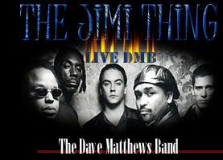

|  |
|
Bassist Stefan Lessard is the youngest member of Dave Matthews Band, by a good seven years. In fact, he was just 16 when Matthews whisked him away from school to join him, drummer Carter Beauford and saxophonist LeRoi Moore in their fledgling band, which made for some interesting situations when the group, with its underage bass player, were booked into bars and clubs. "Yeah, there were a couple of times I was rushed out the back door `cause some cops in front were asking for IDs," Lessard remembers with a laugh. "And since I wasn't legally allowed to be drinking, I was usually elected to drive the van. But (age) was nothing too major, and never a big issue as far as the music was concerned." Lessard certainly seemed to be fated for a career in music. Born in Anaheim, CA, both of his parents were musicians, which led to the family's move to Charlottesville, where the young Lessard took up violin and piano before moving on to guitar. He started playing bass during his early teenage years, after developing a taste for reggae and then, through his high school music teacher, jazz. "It made sense for me to start playing jazz," says Lessard, who quickly switched from electric to upright bass. "It was a good way to practice scales and then play along with the music. I kinda faked it for awhile." Nobody knew, however, as Lessard started popping up, jamming in local clubs and coffeehouses. His playing caught the ear of Matthews, who was a friend of Lessard's music teacher; that led to the invitation to join the band, which Lessard accepted - though it meant switching back to electric bass and quitting school in order to be able to travel for gigs. "I had my parents' backing; they were a little iffy when I first dropped out, and so were the rest of the guys in the band," says Lessard, who eventually got his GED and even spent a month studying music at Virginia Commonwealth University. "To me, it was all education." In fact, Lessard - who recently moved back to Charlottesville from Woodstock with his wife and their young son, Diego (AKA Diggy) is continuing his education via music classes on the internet and plans to return to a formal classroom situation, someday.